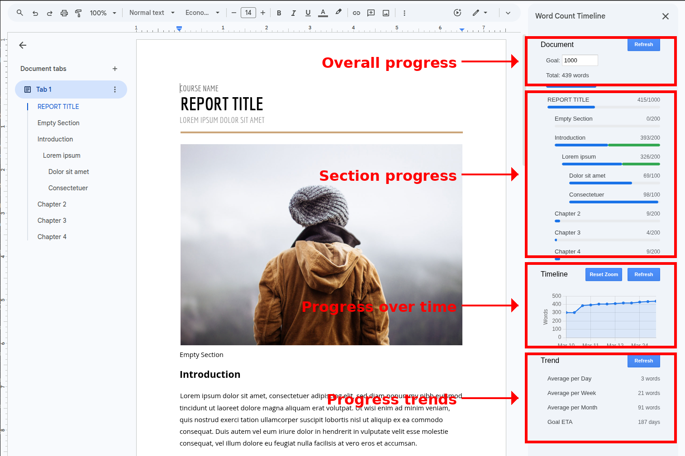
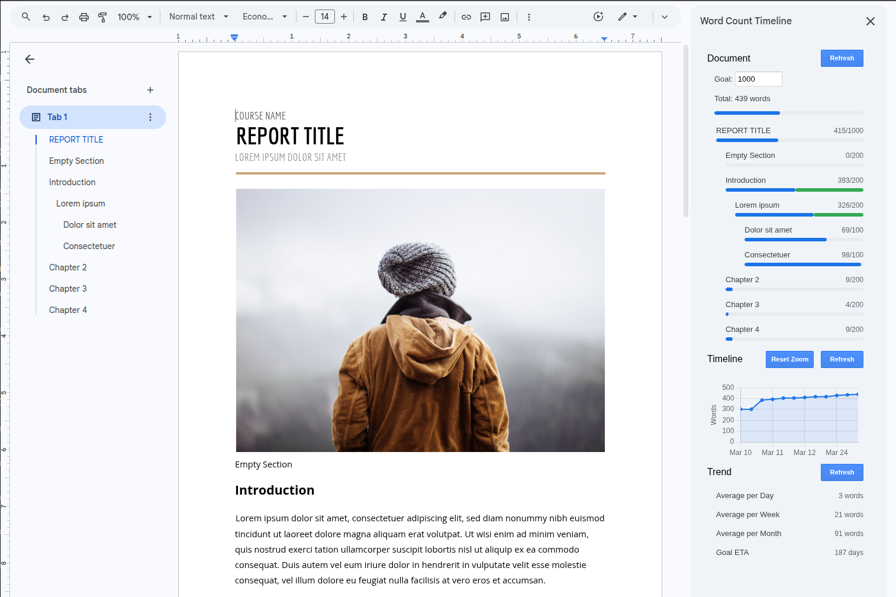

Visualize Your Writing Journey
Word Count Timeline is a Google Docs add-on that helps authors, researchers, and students track their writing productivity. See your word count progress over time with elegant, interactive charts.
Install for Google DocsSee It In Action

